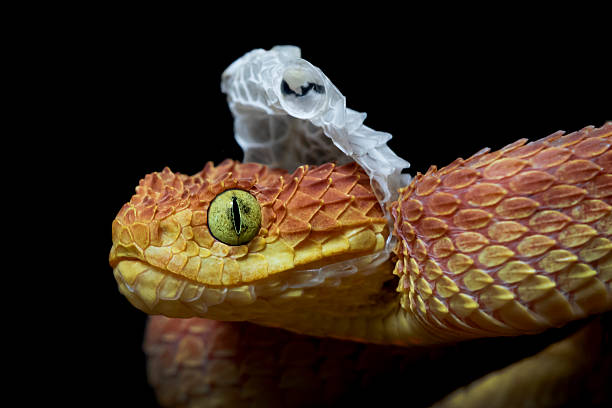
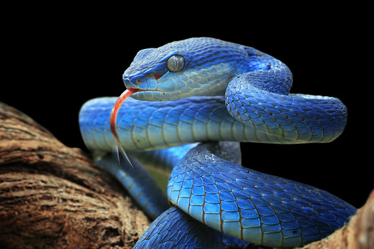

-Surunenler Sinfinin Pulcuqlular
Destesine Aid Yarimdeste
İlanlar elastik cene qurulusuna sahibdir. Bununlada boyuk canlilari uda bilirler.İlanların çoxu zəhərsizdir. Zəhərsiz ilan növləri ovlarına dolanaraq onları boğur. İlanların zəhərli növləri isə zəhərdən ovlanmaq, yaxud özlərini qorumaq məqsədi ilə istifadə edirlər. İlanlar həşərat, qurbağa, quş, balıq, kartankala, siçan, yumurta və s ilə qidalanır. İlanları öyrənən elm serpantologiya adlanır.
Ilan dərisi pulcuqlarla örtülüdür, hamar va quru quruluşa malikdir. İlanların qarın və bel pulcuqlarının quruluşu fərqlidir. Dari ranglari çox müxtəlidir. Bəziləri bir ranga, bəziləri isə 3-4 ranga sahibdir. Rangli ilanlar, əsasən, zəhərlidir. Ancaq zəhərli olmayan rangli ilanlar da var. Rangli dəri təhlükəni bildirir və düşmənləri qorxutmaq üçün istifadə olunur, amma bu o demak deyil ki, birrəngli ilanların dəriləri qorunmaq üçün əlverişsizdir. Birrəngli ilanların rangi daha çox bozumtul, qəhvəyi və qara rəngli olur ki, bu rənglər da torpaqda, qumda, daşda gizlənmək üçün (kamuflyaj) ideal ranglardir..
Dəri dəyişdirmə
Bir çox canlı kimi ilanlar da dəri dəyişdirir. Köhnə dəri ağız tərəfdən cırır, ilan daş, ağac kimi obyektlərə sürtünərək dərisini çıxardır. Bu prosesin bir neçə funksiyası var. İlk növbədə ilan köhnə dəridan azad olur, ham da parazitlərdən təmizlənir.

Zeher başın arxasındakı zəhər vəzilərində toplanır və dişlər vasitəsilə ova, yaxud düşmənə yeridilir. Tüpürən kobra kimi bir neçə ilan təhlükə hiss etdikdə düşmənin gözünə zəhər tüpürür. Bazi heyvanlarda ilan zəhərinə qarşı tabii peyvand vardır və zəhər onlara təsir etmir. 